Project notes
Image Captioning with VGG16 and Transformer
Building an end-to-end Image Captioning pipeline from scratch: collecting an astronomy dataset with Selenium, extracting visual features with pretrained VGG16, implementing a Transformer encoder-decoder in TensorFlow/Keras, and evaluating captions with Perplexity and BLEU.
In this project, we walk through the complete pipeline for building an Image Captioning system that automatically generates descriptive natural-language captions from input images. Following a structured lecture progression, we cover problem framing, automated dataset collection with Selenium, image and text preprocessing, combining a pretrained VGG16 CNN backbone with a custom Transformer encoder-decoder in TensorFlow/Keras, training with masked loss and warmup scheduling, autoregressive inference, and evaluation via Perplexity and BLEU.
1. Introduction and Project Pipeline
Text Generation is a broad NLP family that automatically produces new text conditioned on an input signal. Depending on the input modality, this family spans tasks such as Automatic Speech Recognition (audio to text), Machine Translation (source language to target language), Abstractive Text Summarization (long article to concise summary), and Image Captioning (image to descriptive sentence).
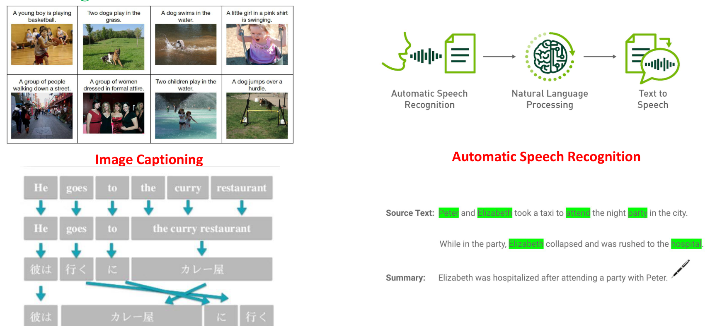
Formally, Image Captioning is the multimodal task of taking an input image and generating a fluent, semantically accurate sentence describing what appears in the scene:
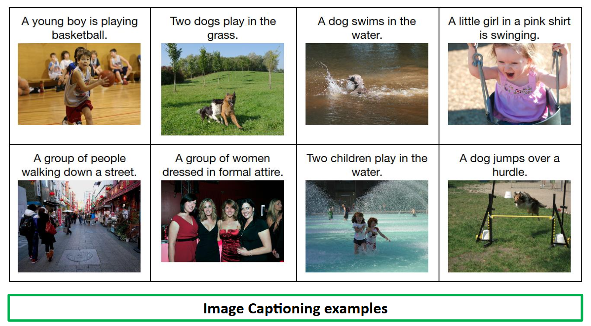
Standard benchmarks such as Flickr8k/30k and MS-COCO pair everyday scenes (sports, pets, people outdoors) with human-written descriptions:
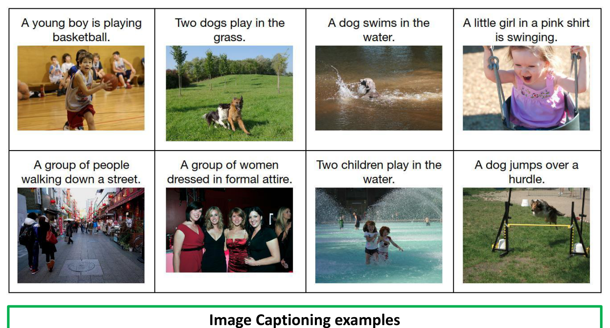
In this project, we apply Image Captioning to a specialized domain: space and astronomy imagery. Given a space photograph (such as galaxies, nebulae, planets, or spacecraft), our model generates a textual caption describing the astrophysical event. The end-to-end engineering workflow breaks down into four stages:
- Collecting the dataset: Scrape paired astronomy images and captions from science articles.
- Preparing training data: Normalize text, build a vocabulary, resize and augment images, and align decoder inputs/targets.
- Training and evaluating the model: Combine VGG16 with a Transformer encoder-decoder and measure performance with Perplexity and BLEU.
- Writing the inference program: Generate captions autoregressively token by token for unseen test images.
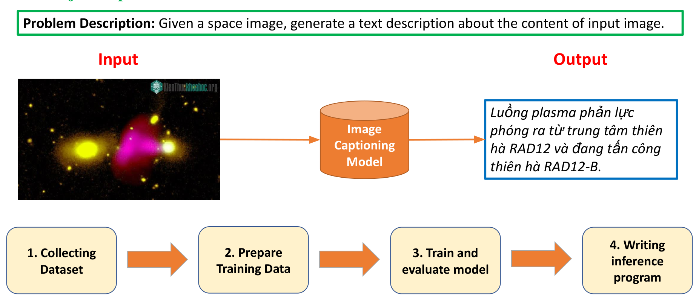
2. Dataset Structure and Web Scraping with Selenium
2.1 Dataset Structure
Our collected dataset lives inside a root directory space_image_captioning_dataset/ containing two components: a folder space_images/ holding sequentially named JPEG files (IMG_000001.jpg, IMG_000002.jpg, ...) and a UTF-8 text file space_captions.txt where each line stores a tab-separated pair image_path\tcaption.
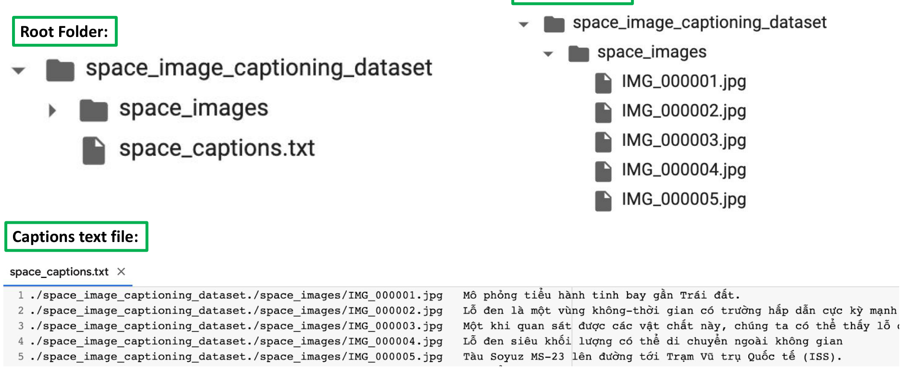
import os
root_dir = "./space_image_captioning_dataset"
images_dir = os.path.join(root_dir, "space_images")
captions_path = os.path.join(root_dir, "space_captions.txt")
os.makedirs(root_dir, exist_ok=True)
os.makedirs(images_dir, exist_ok=True)
caption_file = open(captions_path, "w", encoding="utf8")
2.2 Web Scraping Pipeline with Selenium
To assemble a domain-specific dataset from web articles, we use Selenium to drive a browser, traverse paginated article listings, inspect the DOM via XPath, and download each valid image together with its caption.
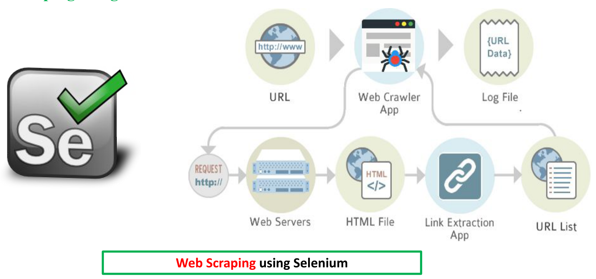
Real-world web pages are messy, so a reliable scraper must handle several edge cases cleanly:
- Pagination and XPath discovery: Loop across listing pages (
/page1to/page100), collect article links matching//a[@class="title"], and navigate into each article to locatediv[@class="img-box"]containers. - Missing tags and timeouts: Wrap element lookups inside
WebDriverWaitandtry...exceptblocks so missing images or broken tags never crash the crawler. - Caption fallback: Some figure boxes omit the
<em>caption element and store the description in the image’saltattribute instead. Falling back toimg_tag.get_attribute("alt")recovers these pairs. - Filtering and RGB conversion: Skip animated
.giffiles and empty captions, fetch raw image bytes withrequests.get()+BytesIO, and convert palette-mode images (img.mode == "P") to standard"RGB"before saving as JPEG.
from io import BytesIO
import requests
from PIL import Image
from selenium.webdriver.common.by import By
from selenium.webdriver.support import expected_conditions as EC
from selenium.webdriver.support.ui import WebDriverWait
# Inside each article page after locating img_box_tags:
for img_box_tag in img_box_tags:
wait = WebDriverWait(img_box_tag, 5)
try:
img_tag = wait.until(EC.visibility_of_element_located((By.TAG_NAME, "img")))
except Exception:
continue
try:
caption_tag = wait.until(EC.visibility_of_element_located((By.TAG_NAME, "em")))
img_caption = caption_tag.text.strip()
except Exception:
img_caption = (img_tag.get_attribute("alt") or "").strip()
img_url = img_tag.get_attribute("src") or ""
if not img_url or img_url.lower().endswith(".gif") or not img_caption:
continue
try:
img_resp = requests.get(img_url, timeout=10)
img = Image.open(BytesIO(img_resp.content))
except Exception:
continue
if img.mode != "RGB":
img = img.convert("RGB")
img_name = f"IMG_{img_idx:06d}.jpg"
img_save_path = os.path.join(images_dir, img_name)
img.save(img_save_path)
caption_file.write(f"{img_save_path}\t{img_caption}\n")
img_idx += 1
3. Method: VGG16 + Transformer Architecture and Training
3.1 Model Design Idea: Bridging Vision and Transformers
The original Transformer architecture (Vaswani et al., 2017) expects a sequence of dense embedding vectors as input to its Encoder. We cannot feed a raw 3D RGB image tensor of shape $(H, W, 3)$ directly into a standard Transformer Encoder.
How do we convert an image into a meaningful sequence of vectors? One naive idea would be to flatten each of the $3$ color channels into a long vector, creating a sequence of just $3$ channel vectors. However, raw pixel values carry almost no high-level semantic meaning and destroy 2D spatial locality.
Instead, we use a pretrained VGG16 convolutional neural network (trained on ImageNet, with its final classification head removed) as a visual feature extractor. Passing an $(H, W, 3)$ image through VGG16 produces a compact spatial feature map of shape $(H', W', 512)$, which we reshape into a sequence of $H' \times W'$ spatial feature tokens, each of dimension $512$. That sequence enters the Transformer Encoder, while the embedded caption tokens enter the Transformer Decoder.
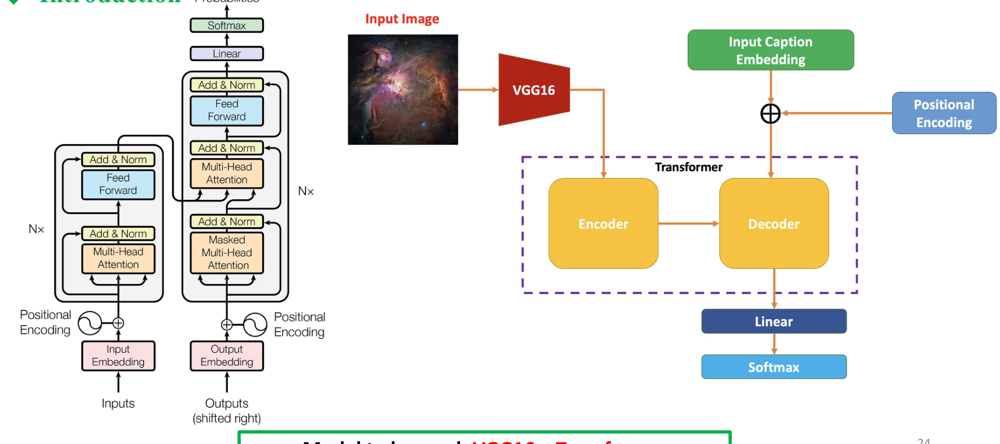
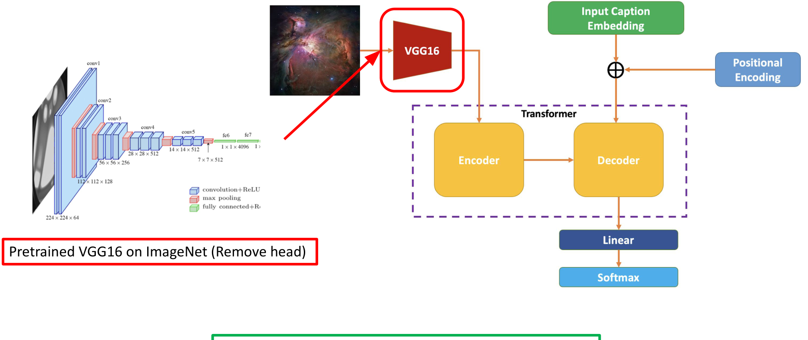
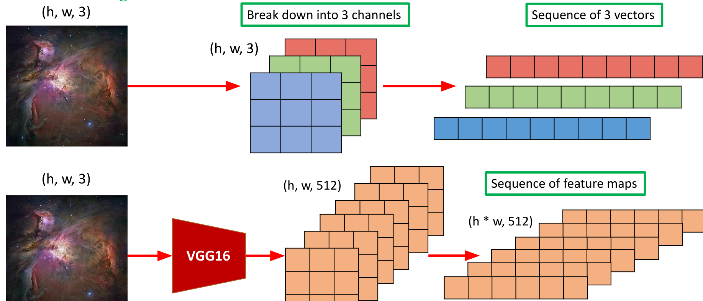
During training, every sample supplies a triplet built from the image and its ground-truth caption (teacher forcing):
- Encoder Input: The preprocessed input image passed through VGG16.
- Decoder Input: The tokenized caption shifted right (
cap[:-1], starting with<start>). - Decoder Output (Target): The next-token target sequence (
cap[1:], ending with<end>).
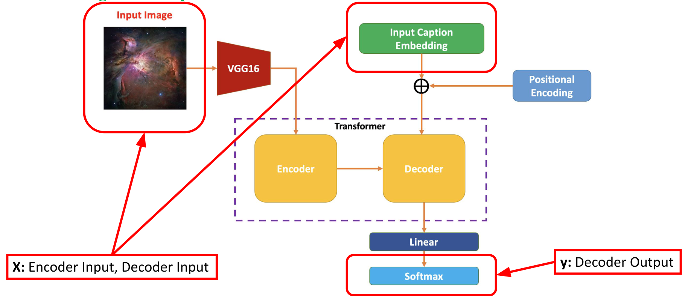
3.2 Data Preprocessing and Augmentation Pipeline
Text Normalization and Corpus Filtering
Every raw caption undergoes five normalization steps: lowercasing, removing punctuation, collapsing repeated whitespace, trimming leading/trailing spaces, and wrapping the sentence with special <start> and <end> tokens. Captions shorter than $5$ words or longer than MAX_SEQ_LEN - 2 are filtered out so the training distribution stays consistent.
import re
def text_normalize(text):
text = text.lower()
text = re.sub(r"[^\w\s]", " ", text)
text = re.sub(r"\s+", " ", text)
text = text.strip()
text = "<start> " + text + " <end>"
return text
with open(captions_filepath, "r", encoding="utf8") as f:
lines = f.readlines()
dataset_dict = {}
skipped_images_lst = []
corpus = []
for line in lines:
line = line.rstrip("\n")
img_path, caption = line.split("\t")
tokens = caption.split(" ")
if len(tokens) < 5 or len(tokens) > (MAX_SEQ_LEN - 2):
skipped_images_lst.append(img_path)
continue
normalized_caption = text_normalize(caption)
corpus.append(normalized_caption)
dataset_dict[img_path] = normalized_caption
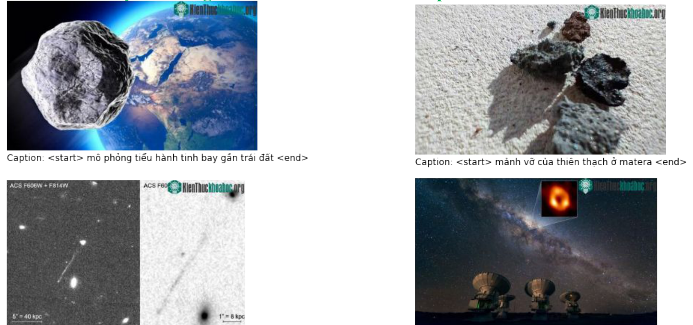
<start> ... <end> captions.Image Preprocessing and Data Augmentation
Each image is read from disk, decoded as a 3-channel JPEG, resized to IMG_SIZE, and cast to tf.float32. For the training split, lightweight on-the-fly augmentation (horizontal flip, small random rotation, and contrast jitter) helps prevent overfitting on a modestly sized custom dataset.
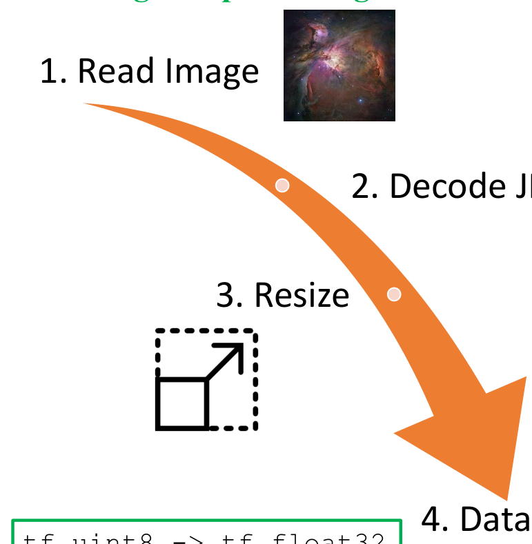
import tensorflow as tf
def preprocess_img(img_path):
img = tf.io.read_file(img_path)
img = tf.image.decode_jpeg(img, channels=3)
img = tf.image.resize(img, IMG_SIZE)
img = tf.image.convert_image_dtype(img, tf.float32)
return img
img_augmentation = tf.keras.Sequential([
tf.keras.layers.RandomFlip("horizontal"),
tf.keras.layers.RandomRotation(0.2),
tf.keras.layers.RandomContrast(0.3),
])
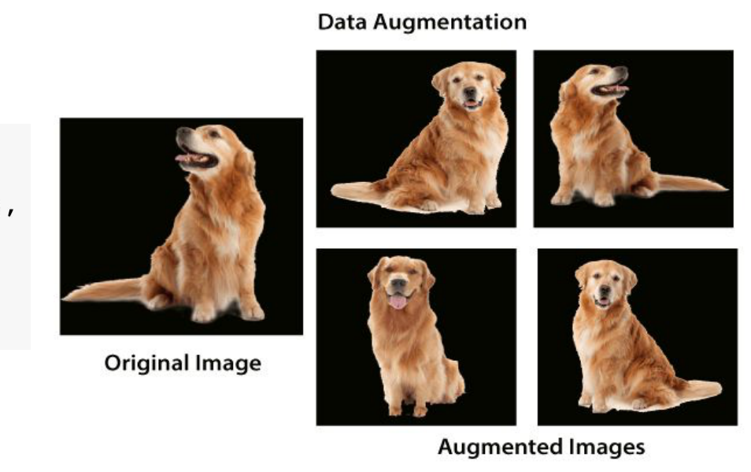
Text Vectorization, Padding, and Dataset Splits
Next, we adapt a tf.keras.layers.TextVectorization layer on the normalized corpus to map words to integer IDs and pad every sequence with 0 up to MAX_SEQ_LEN. Notice we pass standardize=None so our custom <start> and <end> tokens are preserved verbatim.
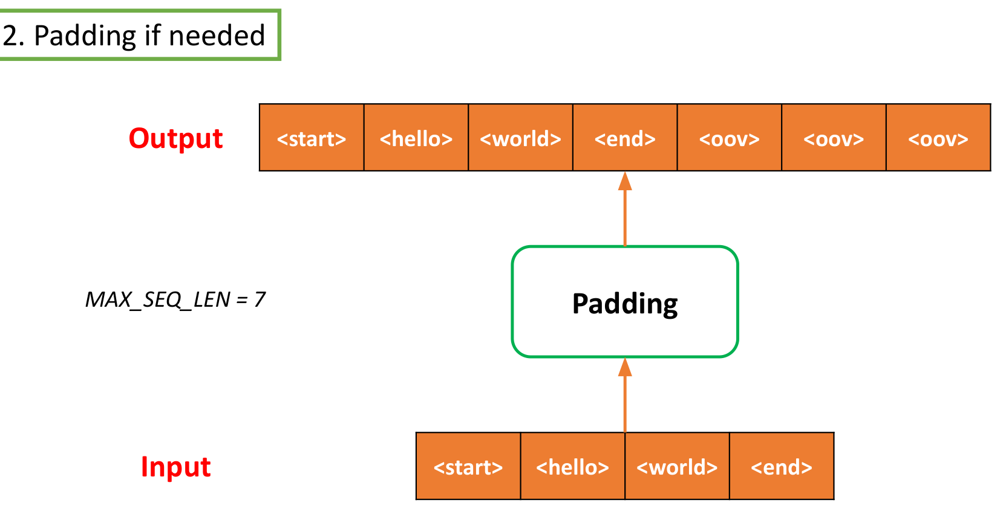
MAX_SEQ_LEN for batched training.import numpy as np
vectorizer = tf.keras.layers.TextVectorization(
max_tokens=VOCAB_SIZE,
output_mode="int",
output_sequence_length=MAX_SEQ_LEN,
standardize=None,
)
vectorizer.adapt(corpus)
# Randomly shuffle and split 70% train / 20% validation / 10% test
X = np.array(list(dataset_dict.keys()))
y = np.array(list(dataset_dict.values()))
n_samples = len(X)
train_idx = int(n_samples * 0.7)
val_idx = train_idx + int(n_samples * 0.2)
idxs = np.random.permutation(n_samples)
X, y = X[idxs], y[idxs]
X_train, y_train = X[:train_idx], y[:train_idx]
X_val, y_val = X[train_idx:val_idx], y[train_idx:val_idx]
X_test, y_test = X[val_idx:], y[val_idx:]
Finally, we assemble asynchronous tf.data.Dataset pipelines that apply augmentation only to the training split and slice each vectorized caption into decoder_input = cap[:-1] and decoder_output = cap[1:]:
AUTOTUNE = tf.data.AUTOTUNE
def process_input_data(img_path, caption, augment=False):
img = preprocess_img(img_path)
if augment:
img = img_augmentation(img)
cap = vectorizer(caption)
decoder_input = cap[:-1]
decoder_output = cap[1:]
return (img, decoder_input), decoder_output
train_ds = (
tf.data.Dataset.from_tensor_slices((X_train, y_train))
.cache()
.prefetch(buffer_size=AUTOTUNE)
.map(lambda x, y: process_input_data(x, y, augment=True), num_parallel_calls=AUTOTUNE)
.batch(BATCH_SIZE)
)
val_ds = (
tf.data.Dataset.from_tensor_slices((X_val, y_val))
.cache()
.prefetch(buffer_size=AUTOTUNE)
.map(process_input_data, num_parallel_calls=AUTOTUNE)
.batch(BATCH_SIZE)
)
test_ds = (
tf.data.Dataset.from_tensor_slices((X_test, y_test))
.cache()
.prefetch(buffer_size=AUTOTUNE)
.map(process_input_data, num_parallel_calls=AUTOTUNE)
.batch(BATCH_SIZE)
)
3.3 Implementing VGG16 and Transformer Modules
Now we build every block of our VGG16 + Transformer architecture cleanly from the ground up:
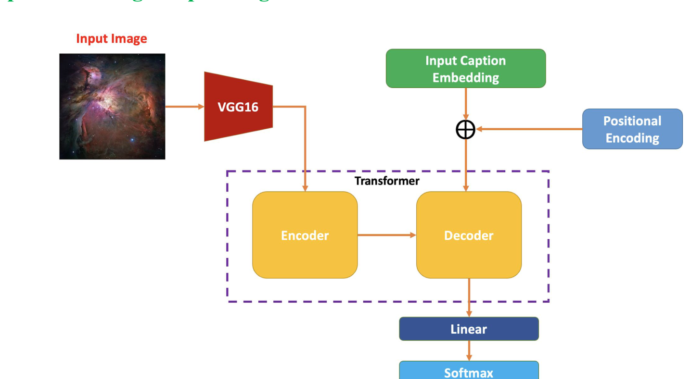
1. Sinusoidal Positional Encoding and Positional Embedding
Because Transformers process tokens in parallel without recurrence, we inject word order using sinusoidal positional encodings added to the scaled token embeddings ($\sqrt{d_{\text{model}}}$):
def positional_encoding(length, depth):
depth = depth // 2
positions = np.arange(length)[:, np.newaxis] # (seq, 1)
depths = np.arange(depth)[np.newaxis, :] / depth # (1, depth)
angle_rates = 1 / (10000 ** depths) # (1, depth)
angle_rads = positions * angle_rates # (pos, depth)
pos_encoding = np.concatenate(
[np.sin(angle_rads), np.cos(angle_rads)], axis=-1
)
return tf.cast(pos_encoding, dtype=tf.float32)
class PositionalEmbedding(tf.keras.layers.Layer):
def __init__(self, vocab_size, d_model):
super().__init__()
self.d_model = d_model
self.embedding = tf.keras.layers.Embedding(vocab_size, d_model, mask_zero=True)
self.pos_encoding = positional_encoding(length=2048, depth=d_model)
def compute_mask(self, *args, **kwargs):
return self.embedding.compute_mask(*args, **kwargs)
def call(self, x):
length = tf.shape(x)[1]
x = self.embedding(x)
# Scale embeddings relative to positional encoding magnitude
x *= tf.math.sqrt(tf.cast(self.d_model, tf.float32))
x = x + self.pos_encoding[tf.newaxis, :length, :]
return x
2. Attention Layers and Feed-Forward Network
All three attention variants (Global Self-Attention in the Encoder, Causal Self-Attention in the Decoder to prevent peeking at future words, and Cross-Attention bridging caption queries with visual encoder keys/values) inherit from a shared BaseAttention block with residual addition and Layer Normalization:
class BaseAttention(tf.keras.layers.Layer):
def __init__(self, **kwargs):
super().__init__()
self.mha = tf.keras.layers.MultiHeadAttention(**kwargs)
self.layernorm = tf.keras.layers.LayerNormalization()
self.add = tf.keras.layers.Add()
class CrossAttention(BaseAttention):
def call(self, x, context):
attn_output, attn_scores = self.mha(
query=x,
key=context,
value=context,
return_attention_scores=True,
)
# Cache attention weights for visualization
self.last_attn_scores = attn_scores
x = self.add([x, attn_output])
x = self.layernorm(x)
return x
class GlobalSelfAttention(BaseAttention):
def call(self, x):
attn_output = self.mha(query=x, value=x, key=x)
x = self.add([x, attn_output])
x = self.layernorm(x)
return x
class CausalSelfAttention(BaseAttention):
def call(self, x):
attn_output = self.mha(
query=x,
value=x,
key=x,
use_causal_mask=True,
)
x = self.add([x, attn_output])
x = self.layernorm(x)
return x
class FeedForward(tf.keras.layers.Layer):
def __init__(self, d_model, dff, dropout_rate=0.1):
super().__init__()
self.seq = tf.keras.Sequential([
tf.keras.layers.Dense(dff, activation="relu"),
tf.keras.layers.Dense(d_model),
tf.keras.layers.Dropout(dropout_rate),
])
self.add = tf.keras.layers.Add()
self.layer_norm = tf.keras.layers.LayerNormalization()
def call(self, x):
x = self.add([x, self.seq(x)])
x = self.layer_norm(x)
return x
3. Pretrained VGG16 Visual Backbone
We load ImageNet-pretrained VGG16 with include_top=False, freeze its weights, and reshape its convolutional output feature grid into a flat sequence of 512-dimensional spatial vectors:
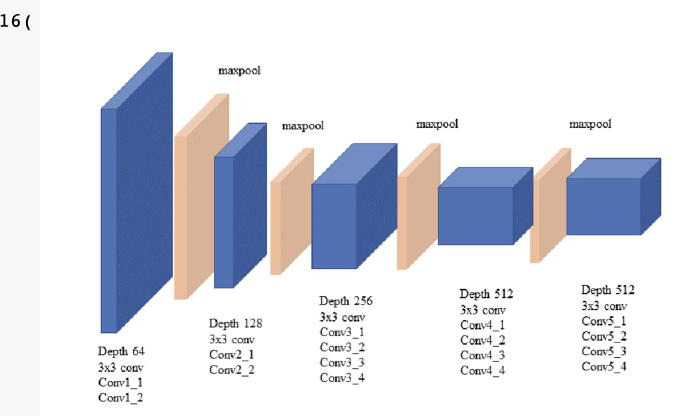
def get_cnn_model():
base_model = tf.keras.applications.vgg16.VGG16(
input_shape=(*IMG_SIZE, 3),
include_top=False,
weights="imagenet",
)
base_model.trainable = False
base_model_out = base_model.output
base_model_out = tf.keras.layers.Reshape(
(-1, base_model_out.shape[-1])
)(base_model_out)
cnn_model = tf.keras.models.Model(base_model.input, base_model_out)
return cnn_model
4. Transformer Encoder, Decoder, and Full ImageCaptioningModel
The Encoder normalizes and projects VGG16’s 512-channel features down to d_model before passing them through $N$ encoder layers. The Decoder embeds the partial caption, applies masked causal self-attention, attends to the visual encoder context via cross-attention, and feeds the final hidden states into a Dense(vocab_size) projection:
class EncoderLayer(tf.keras.layers.Layer):
def __init__(self, *, d_model, num_heads, dff, dropout_rate=0.1):
super().__init__()
self.self_attention = GlobalSelfAttention(
num_heads=num_heads, key_dim=d_model, dropout=dropout_rate
)
self.ffn = FeedForward(d_model, dff, dropout_rate=dropout_rate)
def call(self, x):
x = self.self_attention(x)
x = self.ffn(x)
return x
class Encoder(tf.keras.layers.Layer):
def __init__(self, *, num_layers, d_model, num_heads, dff, vocab_size, dropout_rate=0.1):
super().__init__()
self.d_model = d_model
self.num_layers = num_layers
self.enc_layers = [
EncoderLayer(
d_model=d_model, num_heads=num_heads, dff=dff, dropout_rate=dropout_rate
)
for _ in range(num_layers)
]
self.dropout = tf.keras.layers.Dropout(dropout_rate)
self.layernorm = tf.keras.layers.LayerNormalization()
self.ffn = tf.keras.layers.Dense(d_model, activation="relu")
def call(self, x):
x = self.layernorm(x)
x = self.ffn(x)
x = self.dropout(x)
for i in range(self.num_layers):
x = self.enc_layers[i](x)
return x
class DecoderLayer(tf.keras.layers.Layer):
def __init__(self, *, d_model, num_heads, dff, dropout_rate=0.1):
super().__init__()
self.causal_self_attention = CausalSelfAttention(
num_heads=num_heads, key_dim=d_model, dropout=dropout_rate
)
self.cross_attention = CrossAttention(
num_heads=num_heads, key_dim=d_model, dropout=dropout_rate
)
self.ffn = FeedForward(d_model, dff, dropout_rate=dropout_rate)
def call(self, x, context):
x = self.causal_self_attention(x=x)
x = self.cross_attention(x=x, context=context)
self.last_attn_scores = self.cross_attention.last_attn_scores
x = self.ffn(x)
return x
class Decoder(tf.keras.layers.Layer):
def __init__(self, *, num_layers, d_model, num_heads, dff, vocab_size, dropout_rate=0.1):
super().__init__()
self.d_model = d_model
self.num_layers = num_layers
self.pos_embedding = PositionalEmbedding(vocab_size=vocab_size, d_model=d_model)
self.dropout = tf.keras.layers.Dropout(dropout_rate)
self.dec_layers = [
DecoderLayer(
d_model=d_model, num_heads=num_heads, dff=dff, dropout_rate=dropout_rate
)
for _ in range(num_layers)
]
self.last_attn_scores = None
def call(self, x, context):
x = self.pos_embedding(x)
x = self.dropout(x)
for i in range(self.num_layers):
x = self.dec_layers[i](x, context)
self.last_attn_scores = self.dec_layers[-1].last_attn_scores
return x
class ImageCaptioningModel(tf.keras.Model):
def __init__(self, *, num_layers, d_model, num_heads, dff, vocab_size, dropout_rate=0.1):
super().__init__()
self.cnn_model = get_cnn_model()
self.encoder = Encoder(
num_layers=num_layers,
d_model=d_model,
num_heads=num_heads,
dff=dff,
vocab_size=vocab_size,
dropout_rate=dropout_rate,
)
self.decoder = Decoder(
num_layers=num_layers,
d_model=d_model,
num_heads=num_heads,
dff=dff,
vocab_size=vocab_size,
dropout_rate=dropout_rate,
)
self.final_layer = tf.keras.layers.Dense(vocab_size)
def call(self, inputs):
img, x = inputs
context = self.cnn_model(img)
context = self.encoder(context)
x = self.decoder(x, context)
logits = self.final_layer(x)
try:
del logits._keras_mask
except AttributeError:
pass
return logits
Instantiating the model with N_LAYERS = 4, D_MODEL = 128, D_FF = 512, N_HEADS = 8, and DROPOUT_RATE = 0.2 yields roughly 22.8 million parameters (14.7M in VGG16, 2.7M in the Transformer Encoder, 5.1M in the Decoder, and 0.33M in the output vocabulary projection).
3.4 Learning Rate Scheduler, Masked Loss, and Masked Accuracy
Following the original Transformer paper, we update the learning rate at every training step (batch) using linear warmup followed by inverse square-root decay:
class CustomSchedule(tf.keras.optimizers.schedules.LearningRateSchedule):
def __init__(self, d_model, warmup_steps=4000):
super().__init__()
self.d_model = tf.cast(d_model, tf.float32)
self.warmup_steps = warmup_steps
def __call__(self, step):
step = tf.cast(step, dtype=tf.float32)
arg1 = tf.math.rsqrt(step)
arg2 = step * (self.warmup_steps ** -1.5)
return tf.math.rsqrt(self.d_model) * tf.math.minimum(arg1, arg2)
Because captions are padded with token index 0 up to MAX_SEQ_LEN, computing standard cross-entropy across every position would let padding tokens dominate the gradients. We therefore mask out all label == 0 positions in both masked_loss and masked_accuracy:
def masked_loss(label, pred):
mask = label != 0
loss_object = tf.keras.losses.SparseCategoricalCrossentropy(
from_logits=True, reduction="none"
)
loss = loss_object(label, pred)
mask = tf.cast(mask, dtype=loss.dtype)
loss *= mask
return tf.reduce_sum(loss) / tf.reduce_sum(mask)
def masked_accuracy(label, pred):
pred = tf.argmax(pred, axis=2)
label = tf.cast(label, pred.dtype)
match = (label == pred) & (label != 0)
match = tf.cast(match, dtype=tf.float32)
mask = tf.cast(label != 0, dtype=tf.float32)
return tf.reduce_sum(match) / tf.reduce_sum(mask)
3.5 Training, Learning Curves, and Autoregressive Inference
We train the model for 50 epochs using ic_model.fit(train_ds, epochs=50, validation_data=val_ds) and plot training and validation loss and accuracy:
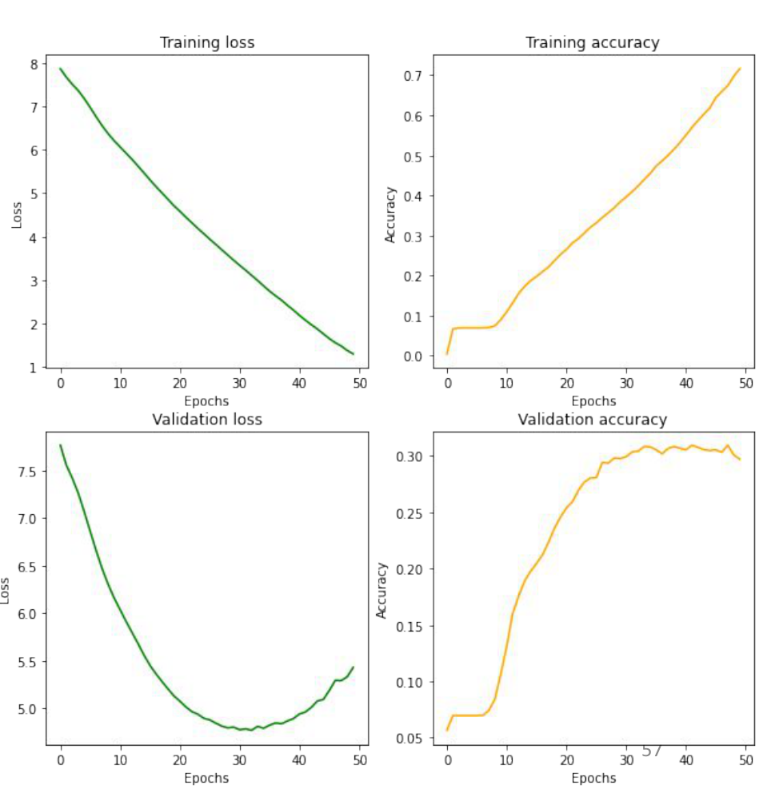
As seen in Figure 17, training loss drops steadily from ~7.9 to ~1.3 while training accuracy climbs above 70%. Validation loss reaches its minimum around epoch 30 before gently ticking upward as the model begins to overfit the small custom dataset, while validation token accuracy plateaus around 31%.
At inference time, we generate a caption autoregressively: starting with output_str = "<start>", we repeatedly feed the image and current partial caption into the model, take the highest-probability next token via greedy np.argmax, and stop as soon as <end> or MAX_SEQ_LEN is reached:
def generate_caption(img_path, ic_model, vectorizer):
img = preprocess_img(img_path)
display_img = img.numpy().clip(0, 255).astype(np.uint8)
img_batch = np.expand_dims(display_img, axis=0)
output_str = "<start>"
for idx in range(MAX_SEQ_LEN):
tokenized_caption = vectorizer([output_str])[:, :-1]
pred = ic_model.predict((img_batch, tokenized_caption), verbose=0)
sampled_token_idx = np.argmax(pred[0, idx, :])
sampled_token = index_lookup[sampled_token_idx]
if sampled_token == "<end>":
break
output_str += f" {sampled_token}"
generated_caption = output_str.replace("<start>", "").replace("<end>", "").strip()
return display_img, generated_caption
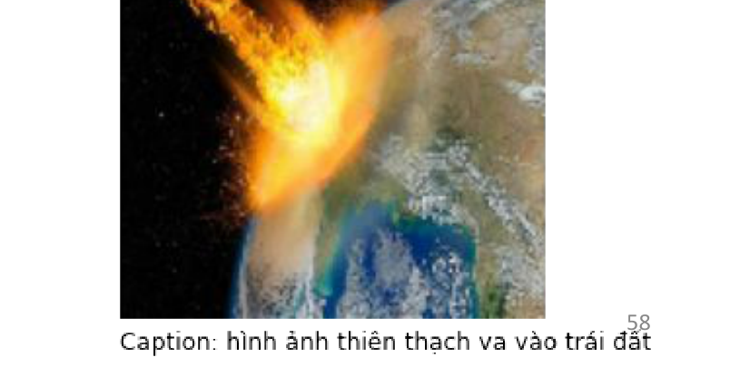
4. Evaluation Metrics: Perplexity and BLEU Score
Token-level accuracy alone does not fully measure sentence quality in captioning. Two standard language generation metrics complement each other well:
4.1 Perplexity
Perplexity measures how uncertain (surprised) the language model is when predicting a ground-truth token sequence $W = (w_1, w_2, \dots, w_N)$. Lower perplexity indicates higher confidence and better calibration:
In TensorFlow, since average cross-entropy loss equals the negative log-likelihood per token, perplexity is simply $\exp(\text{mean cross-entropy loss})$:
def compute_perplexity(logits, targets):
loss_fn = tf.keras.losses.SparseCategoricalCrossentropy(
from_logits=True, reduction="none"
)
loss = loss_fn(targets, logits)
perplexity = np.exp(np.mean(loss))
return perplexity
4.2 BLEU Score
BLEU (Bilingual Evaluation Understudy) measures n-gram overlap between generated captions and human reference captions, combined with a Brevity Penalty $p$ to prevent the model from gaming precision by outputting overly short fragments:
where $m$ is the number of matched n-grams, $w_t$ is the total number of predicted n-grams, $c$ is the candidate caption length, and $r$ is the reference caption length:
from nltk.translate.bleu_score import corpus_bleu
def compute_bleu(predicted, targets):
predicted_strings = []
for seq in predicted:
seq = np.argmax(seq, axis=1)
string_seq = " ".join(
[tokenizer.sequences_to_texts([[token]])[0] for token in seq if token != 0]
)
predicted_strings.append(string_seq)
target_strings = []
for seq in targets:
seq = seq.numpy().tolist()
string_seq = " ".join(
[tokenizer.sequences_to_texts([[token]])[0] for token in seq if token != 0]
)
target_strings.append([string_seq])
return corpus_bleu(target_strings, predicted_strings)
5. Summary and References
To recap the complete Image Captioning workflow:
- End-to-end data pipeline: Automated dataset creation via Selenium paired with regex text normalization, image augmentation, and
tf.databatching. - Multimodal architecture: Pretrained VGG16 extracts spatial visual tokens $(H' \times W', 512)$ while a custom Transformer encoder-decoder aligns image regions with caption words through cross-attention.
- Stable sequence training: Warmup learning-rate scheduling and padding-aware masked loss/accuracy keep gradient updates focused strictly on real tokens.
- Quantitative evaluation: Combining Perplexity (probabilistic fluency) and BLEU (n-gram overlap against references) provides a balanced view of caption quality.
References
- Ashish Vaswani et al., Attention Is All You Need (NeurIPS 2017).
- Karen Simonyan and Andrew Zisserman, Very Deep Convolutional Networks for Large-Scale Image Recognition (VGG16) (ICLR 2015).
- Kishore Papineni et al., BLEU: a Method for Automatic Evaluation of Machine Translation (ACL 2002).
- TensorFlow Official Tutorial, Neural Machine Translation with a Transformer and Keras.
- Dinh-Thang Duong (AI VIETNAM All-in-One Course), Module 7: Image Captioning Project lecture slides.